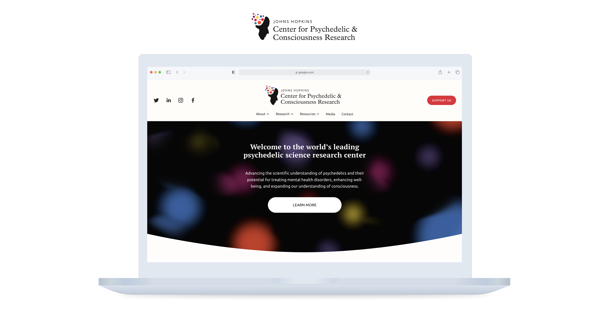
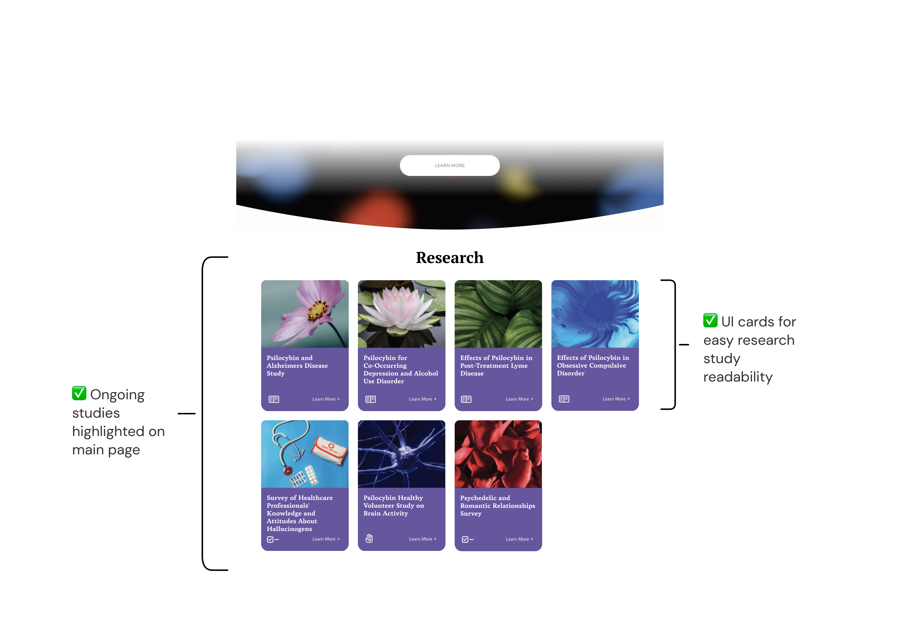

Redesigning online presence for psychedelic research center
Center for Psychedelic and Consciousness Research
Website Design

Timeline
January 2024 - PresentTools
Team
Solo Designer, reporting under Data & Analytics Director
PROJECT OVERVIEW
JHU's Center for Psychedelic and Consciousness Research is undergoing a branding refresh.
As an intern with the Center, I was recruited to help with the design of the website
and improve the company's established brand and online presence to help bring more awareness,
interest, and support for research on psychedelics.
MY ROLE
I worked on updates to the website in the CMS Squarespace for ease of editing in the future.
Specifically for the website, I have created sections for published, ongoing studies, and FAQ,
pages for internships and full-time employment opportunities, and other resources such as a compilation
of measures of psychedelic experiences and a team page.
For the general branding, I contributed to building the CPCR's style guide with font style and compiling the website copy
to ensure consistency with the Center's voice.
INTERNAL RESEARCH DATA
Main goal: informational hub
Based on previous research and advice from within the
CPCR data and analytics team, there was one main goal of the website redesign:
to ensure that we create an up-to-date informational hub for those interested in their
research.
There were some groups that I wanted to prioritize when helping in the design of the website.
CPCR Researchers
How can researchers in the Center garner more interest in their work?
✅ Team Pages and Biography Pages
✅ Home Page: Published and Ongoing Studies Sections
✅ Home Page: Published and Ongoing Studies Sections
New Researchers
How can those interested in the research get more info? Are there ways to become more involved?
✅ Internship and Employment Opportunities Pages
✅ Home Page: Published and Ongoing Studies Sections
✅ Miscellaneous Sections: FAQ and Other Resources
✅ Home Page: Published and Ongoing Studies Sections
✅ Miscellaneous Sections: FAQ and Other Resources
Funders
What sets this Center apart? How can funders easily access info and understand more about the organization?
✅ Home Page: Published and Ongoing Studies Sections
Data Team
How can we make sure that the website can stay up-to-date even if updated by those unfamiliar with technical or design tools?
✅ Simple Tools: Squarespace and Canva
Published and Ongoing Studies

Internship and Employment Opportunities
For the audience interested in becoming an active participant in the Center's research, I created the pages
outlining the internship opportunities and open employee positions.
FAQ and Other Resources
For those wanting to know more about the Center or psychedelic research in any capacity, I compiled other resources
and refined copy for frequently asked questions as well as the top navigation and footer for easier navigation of the
website.